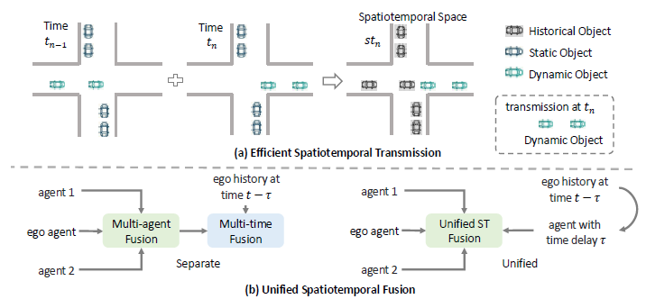
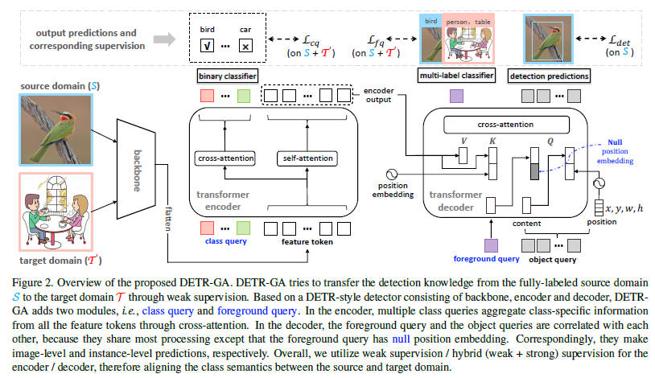
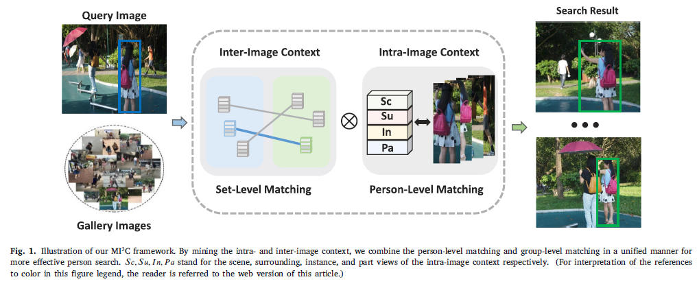
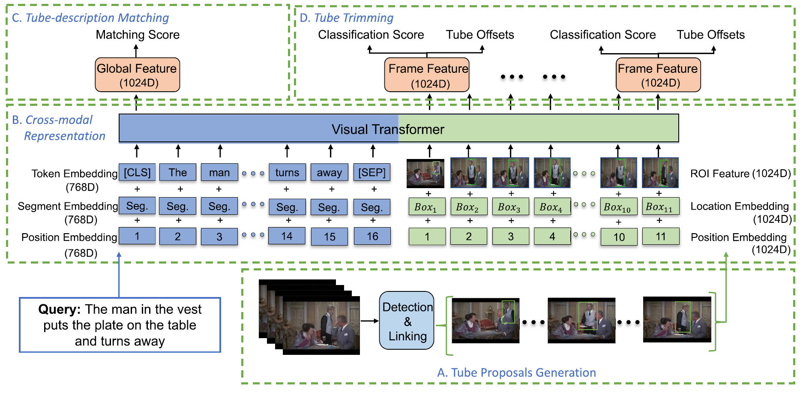
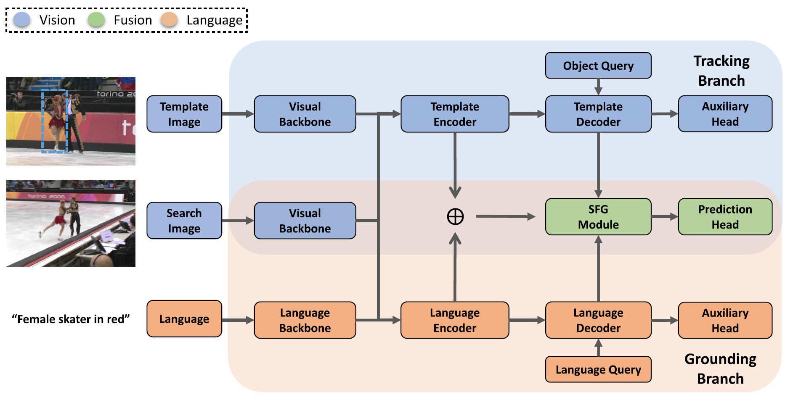
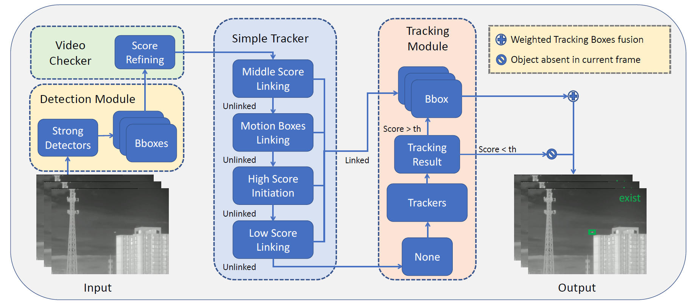

|
Zongheng Tang (汤宗衡)
I'm a postdoctoral fellow at the Hangzhou International Innovation Institute, Beihang University, fortunate to be co-advised by Prof. Zhiming Zheng and Prof. Si Liu. I received my Ph.D. and B.Eng. degrees in Computer Science from Beihang University.
My research interests focus on computer vision and embodied AI.
Email /
CV /
Google Scholar /
Github
|
|
Research
Some selected papers are highlighted. (* denotes equal contribution)
|
|

|
CoST: Efficient Collaborative Perception From Unified Spatiotemporal Perspective
Zongheng Tang, Yi Liu, Yifan Sun, Yulu Gao, Jinyu Chen, Runsheng Xu, Si Liu
ICCV, 2025 (Highlight)
project page / arXiv
Proposed a unified spatiotemporal perspective for collaborative perception, significantly reducing communication bandwidth while improving 3D object detection accuracy.
|
|

|
Detr with additional global aggregation for cross-domain weakly supervised object detection
Zongheng Tang, Yifan Sun, Si Liu, Yi Yang
CVPR, 2023
project page / arXiv
Introduced a domain adaptive paradigm based on the DETR framework with a novel encoder-decoder dual-level global Query aggregation module.
|
|

|
MI3C: Mining intra-and inter-image context for person search
Zongheng Tang*, Yulu Gao*, Tianrui Hui, Fengguang Peng, Si Liu
Pattern Recognition (PR), 2024
project page / arXiv
A novel approach for person search that effectively mines contextual information both within and across images.
|
|

|
Human-centric spatio-temporal video grounding with visual transformers
Zongheng Tang, Yue Liao, Si Liu, Guanbin Li, Xiaojie Jin, Hongxu Jiang, Qian Yu, Dong Xu
TCSVT, 2021
project page / arXiv
Proposed the human-centric spatio-temporal video grounding task and established a popular benchmark dataset and baseline.
|
|

|
Unified transformer with isomorphic branches for natural language tracking
Rong Wang*, Zongheng Tang*, Qianli Zhou, Xiaoqian Liu, Tianrui Hui, Quange Tan, Si Liu
TCSVT, 2023
project page / arXiv
Designed a language-vision isomorphic dual-branch architecture for highly accurate language-guided object tracking.
|
|

|
Strong Detector with Simple Tracker
Zongheng Tang*, Yulu Gao*, Zizheng Xun*, Fengguang Peng*, Yifan Sun, Si Liu, Bo Li
CVPRW, 2023
project page / arXiv
Developed a joint UAV detection and tracking model integrating trajectory prediction and appearance feature matching.
|
-
Champion (1st place) - CVPR 2023 3rd Anti-UAV Tracking Challenge (Lead Participant)
-
3rd Place - CVPR 2023 3rd Anti-UAV Detection Challenge (Lead Participant)
-
Runner-up (2nd place) - ICCV 2022 2nd Anti-UAV Tracking Challenge (Core Participant)
-
Champion (1st place) - ACL 2020 REVERIE Vision-Language Navigation Challenge (Core Participant)
|
|
{kind=link}